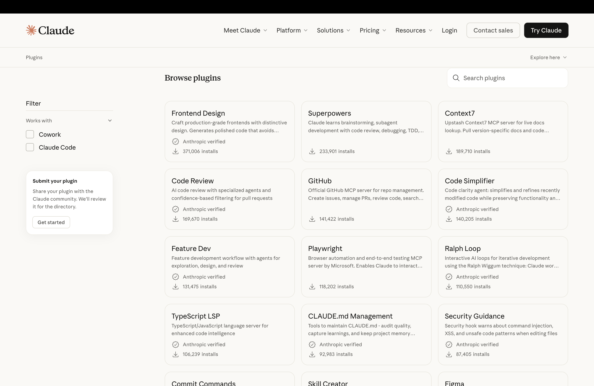

sequenceDiagram participant M as Model participant X as Runtime participant W as World M->>X: tool-call tokens X->>W: execute action W-->>X: observation X-->>M: append to context
Tools 1
Day 1 - Block 4
Tools are a Leap 1
- Agents can act externally
- “World” responds with observations
- New state enters context
Tool Calls Are Tokens 2
Claude Cowork
Agent Skills: Defining Behavior
my-skill/
├── SKILL.md # Required: instructions + metadata
├── scripts/ # Optional: executable code
├── references/ # Optional: documentation
└── assets/ # Optional: templates, resources. . .
excel/
├── SKILL.md # Required: instructions + metadata
├── scripts/ # Optional: executable code
├── recalc.py # Example: Excel formula recalculation scriptAgent Skills: Defining Behavior
SKILL.md:
---
name: xlsx
description: "Use this skill any time a spreadsheet file is the primary input or output. This means any task where the user wants to: open, read, edit, or fix an existing .xlsx, .xlsm, .csv, or .tsv file (e.g., adding columns, computing formulas, formatting, charting, cleaning messy data); create a new spreadsheet from scratch or from other data sources; or convert between tabular file formats. Trigger especially when the user references a spreadsheet file by name or path — even casually (like \"the xlsx in my downloads\") — and wants something done to it or produced from it. Also trigger for cleaning or restructuring messy tabular data files (malformed rows, misplaced headers, junk data) into proper spreadsheets. The deliverable must be a spreadsheet file. Do NOT trigger when the primary deliverable is a Word document, HTML report, standalone Python script, database pipeline, or Google Sheets API integration, even if tabular data is involved."
license: Proprietary. LICENSE.txt has complete terms
---
# Requirements for Outputs
## All Excel files
### Professional Font
- Use a consistent, professional font (e.g., Arial, Times New Roman) for all deliverables unless otherwise instructed by the user
### Zero Formula Errors
- Every Excel model MUST be delivered with ZERO formula errors (#REF!, #DIV/0!, #VALUE!, #N/A, #NAME?)
### Preserve Existing Templates (when updating templates)
- Study and EXACTLY match existing format, style, and conventions when modifying files
- Never impose standardized formatting on files with established patterns
- Existing template conventions ALWAYS override these guidelines
## Financial models
### Color Coding Standards
Unless otherwise stated by the user or existing template
#### Industry-Standard Color Conventions
- **Blue text (RGB: 0,0,255)**: Hardcoded inputs, and numbers users will change for scenarios
- **Black text (RGB: 0,0,0)**: ALL formulas and calculations
- **Green text (RGB: 0,128,0)**: Links pulling from other worksheets within same workbook
- **Red text (RGB: 255,0,0)**: External links to other files
- **Yellow background (RGB: 255,255,0)**: Key assumptions needing attention or cells that need to be updated
### Number Formatting Standards
#### Required Format Rules
- **Years**: Format as text strings (e.g., "2024" not "2,024")
- **Currency**: Use $#,##0 format; ALWAYS specify units in headers ("Revenue ($mm)")
- **Zeros**: Use number formatting to make all zeros "-", including percentages (e.g., "$#,##0;($#,##0);-")
- **Percentages**: Default to 0.0% format (one decimal)
- **Multiples**: Format as 0.0x for valuation multiples (EV/EBITDA, P/E)
- **Negative numbers**: Use parentheses (123) not minus -123
### Formula Construction Rules
#### Assumptions Placement
- Place ALL assumptions (growth rates, margins, multiples, etc.) in separate assumption cells
- Use cell references instead of hardcoded values in formulas
- Example: Use =B5*(1+$B$6) instead of =B5*1.05
#### Formula Error Prevention
- Verify all cell references are correct
- Check for off-by-one errors in ranges
- Ensure consistent formulas across all projection periods
- Test with edge cases (zero values, negative numbers)
- Verify no unintended circular references
#### Documentation Requirements for Hardcodes
- Comment or in cells beside (if end of table). Format: "Source: [System/Document], [Date], [Specific Reference], [URL if applicable]"
- Examples:
- "Source: Company 10-K, FY2024, Page 45, Revenue Note, [SEC EDGAR URL]"
- "Source: Company 10-Q, Q2 2025, Exhibit 99.1, [SEC EDGAR URL]"
- "Source: Bloomberg Terminal, 8/15/2025, AAPL US Equity"
- "Source: FactSet, 8/20/2025, Consensus Estimates Screen"
# XLSX creation, editing, and analysis
## Overview
A user may ask you to create, edit, or analyze the contents of an .xlsx file. You have different tools and workflows available for different tasks.
## Important Requirements
**LibreOffice Required for Formula Recalculation**: You can assume LibreOffice is installed for recalculating formula values using the `scripts/recalc.py` script. The script automatically configures LibreOffice on first run, including in sandboxed environments where Unix sockets are restricted (handled by `scripts/office/soffice.py`)
## Reading and analyzing data
### Data analysis with pandas
For data analysis, visualization, and basic operations, use **pandas** which provides powerful data manipulation capabilities:
import pandas as pd
# Read Excel
df = pd.read_excel('file.xlsx') # Default: first sheet
all_sheets = pd.read_excel('file.xlsx', sheet_name=None) # All sheets as dict
# Analyze
df.head() # Preview data
df.info() # Column info
df.describe() # Statistics
# Write Excel
df.to_excel('output.xlsx', index=False)
# Write Formulas in Excel
When editing formulas in excel, run scripts/recalc.py after to ensure all formula values are updated with LibreOffice.scripts/recalc.py:
"""
Excel Formula Recalculation Script
Recalculates all formulas in an Excel file using LibreOffice
"""
import json
import os
import platform
import subprocess
import sys
from pathlib import Path
from office.soffice import get_soffice_env
from openpyxl import load_workbook
MACRO_DIR_MACOS = "~/Library/Application Support/LibreOffice/4/user/basic/Standard"
MACRO_DIR_LINUX = "~/.config/libreoffice/4/user/basic/Standard"
MACRO_FILENAME = "Module1.xba"
RECALCULATE_MACRO = """<?xml version="1.0" encoding="UTF-8"?>
<!DOCTYPE script:module PUBLIC "-//OpenOffice.org//DTD OfficeDocument 1.0//EN" "module.dtd">
<script:module xmlns:script="http://openoffice.org/2000/script" script:name="Module1" script:language="StarBasic">
Sub RecalculateAndSave()
ThisComponent.calculateAll()
ThisComponent.store()
ThisComponent.close(True)
End Sub
</script:module>"""
def has_gtimeout():
try:
subprocess.run(
["gtimeout", "--version"], capture_output=True, timeout=1, check=False
)
return True
except (FileNotFoundError, subprocess.TimeoutExpired):
return False
def setup_libreoffice_macro():
macro_dir = os.path.expanduser(
MACRO_DIR_MACOS if platform.system() == "Darwin" else MACRO_DIR_LINUX
)
macro_file = os.path.join(macro_dir, MACRO_FILENAME)
if (
os.path.exists(macro_file)
and "RecalculateAndSave" in Path(macro_file).read_text()
):
return True
if not os.path.exists(macro_dir):
subprocess.run(
["soffice", "--headless", "--terminate_after_init"],
capture_output=True,
timeout=10,
env=get_soffice_env(),
)
os.makedirs(macro_dir, exist_ok=True)
try:
Path(macro_file).write_text(RECALCULATE_MACRO)
return True
except Exception:
return False
def recalc(filename, timeout=30):
if not Path(filename).exists():
return {"error": f"File {filename} does not exist"}
abs_path = str(Path(filename).absolute())
if not setup_libreoffice_macro():
return {"error": "Failed to setup LibreOffice macro"}
cmd = [
"soffice",
"--headless",
"--norestore",
"vnd.sun.star.script:Standard.Module1.RecalculateAndSave?language=Basic&location=application",
abs_path,
]
if platform.system() == "Linux":
cmd = ["timeout", str(timeout)] + cmd
elif platform.system() == "Darwin" and has_gtimeout():
cmd = ["gtimeout", str(timeout)] + cmd
result = subprocess.run(cmd, capture_output=True, text=True, env=get_soffice_env())
if result.returncode != 0 and result.returncode != 124:
error_msg = result.stderr or "Unknown error during recalculation"
if "Module1" in error_msg or "RecalculateAndSave" not in error_msg:
return {"error": "LibreOffice macro not configured properly"}
return {"error": error_msg}
try:
wb = load_workbook(filename, data_only=True)
excel_errors = [
"#VALUE!",
"#DIV/0!",
"#REF!",
"#NAME?",
"#NULL!",
"#NUM!",
"#N/A",
]
error_details = {err: [] for err in excel_errors}
total_errors = 0
for sheet_name in wb.sheetnames:
ws = wb[sheet_name]
for row in ws.iter_rows():
for cell in row:
if cell.value is not None and isinstance(cell.value, str):
for err in excel_errors:
if err in cell.value:
location = f"{sheet_name}!{cell.coordinate}"
error_details[err].append(location)
total_errors += 1
break
wb.close()
result = {
"status": "success" if total_errors == 0 else "errors_found",
"total_errors": total_errors,
"error_summary": {},
}
for err_type, locations in error_details.items():
if locations:
result["error_summary"][err_type] = {
"count": len(locations),
"locations": locations[:20],
}
wb_formulas = load_workbook(filename, data_only=False)
formula_count = 0
for sheet_name in wb_formulas.sheetnames:
ws = wb_formulas[sheet_name]
for row in ws.iter_rows():
for cell in row:
if (
cell.value
and isinstance(cell.value, str)
and cell.value.startswith("=")
):
formula_count += 1
wb_formulas.close()
result["total_formulas"] = formula_count
return result
except Exception as e:
return {"error": str(e)}
def main():
if len(sys.argv) < 2:
print("Usage: python recalc.py <excel_file> [timeout_seconds]")
print("\nRecalculates all formulas in an Excel file using LibreOffice")
print("\nReturns JSON with error details:")
print(" - status: 'success' or 'errors_found'")
print(" - total_errors: Total number of Excel errors found")
print(" - total_formulas: Number of formulas in the file")
print(" - error_summary: Breakdown by error type with locations")
print(" - #VALUE!, #DIV/0!, #REF!, #NAME?, #NULL!, #NUM!, #N/A")
sys.exit(1)
filename = sys.argv[1]
timeout = int(sys.argv[2]) if len(sys.argv) > 2 else 30
result = recalc(filename, timeout)
print(json.dumps(result, indent=2))
if __name__ == "__main__":
main()MCP Overview 3
sequenceDiagram participant U as User participant A as Agent participant M as MCP Server U->>A: "I have investment project X, what's the NPV?" A->>M: call npv_tool M-->>M: computation M->>A: JSON result A->>U: "Project X has an NPV of $Y, i chose a discount rate of Z%"
Skills vs MCP
@ragSkillMcpRlm; @willisonAgenticPatterns
| MCP | Skill |
|---|---|
| Interface | Behavior |
| Connect tools | Solve tasks |
| Tool logic | Agent logic |
Gallery
